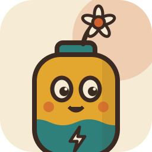

Mock-up of every surface of the upsy tray app, at real Windows 11 size, light theme left and dark theme right.
All numbers are synthetic but shaped on real EB3A captures. This file is the reference the WPF build follows
(change add-eb3a-tray-monitor).